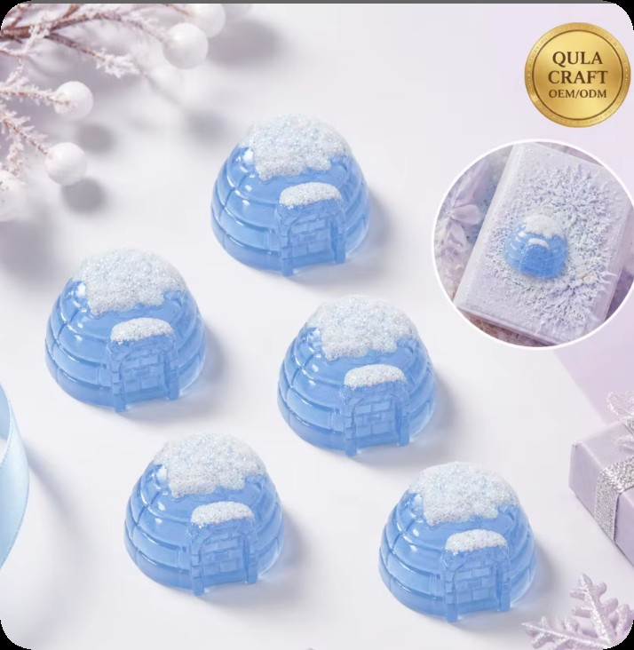
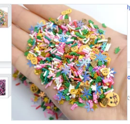

A family photograph in a decorated frame. A tree ornament with a handwritten date. A small box holding notes from everyone at the table. Some Christmas gifts carry their meaning in the details people add themselves. Making them together gives you a chance to share ideas, laugh at an unexpected color combination and spend an afternoon on something you can keep.

Start with a person and a shared memory
Before choosing the decorations, think about the person receiving the gift. Which photograph would make them smile? Do they love a snowy winter palette, bright fruit colors or tiny food-shaped details? A grandparent might enjoy a family picture; a sibling might like an ornament with a favorite color and a funny message on the back.
Write the recipient's name and one small idea on a card. Let each family member suggest a color, a shape or a few words. You now have a direction for the gift, and everyone has contributed before the glue even comes out. A Christmas palette can be red and green, soft pink and cream, or a blue-and-white winter scene. Choose the combination that feels like your family.
Prepare a table everyone can create around
Gather plain frames, ornament blanks, card stock or small keepsake boxes, plus paper, pencils, ribbon and a table covering. Add a selection of ready-made resin charms or flatback cabochons and prepared polymer clay slices. The resin pieces can give the design a focal point; the smaller clay slices can add color around it. Keep each design in a separate tray so people can try combinations without losing their favorite pieces.
These ideas use finished decorative components. They do not require casting liquid resin or shaping and baking raw polymer clay. Match the component size to the blank and choose an adhesive suitable for both surfaces, following that product's instructions. A flatback piece is intended for a surface layout; a hanging connection needs a confirmed hole or suitable separate fitting. Product photographs alone do not establish the attachment method.
Explore resin charms and flatback cabochons and polymer clay slices and sprinkles before choosing your components.
Gift idea 1: a family photo frame with a winter corner
Choose a photograph first, then place it beside a plain frame. Arrange one or two resin decorations near a corner and try a short border of polymer clay slices along an adjoining edge. Leave space around the picture so the people in it remain the focus. Move the pieces around, photograph the layout and ask the family which arrangement they prefer before fixing anything in place.
One person can plan the colors, another can choose the photo, and someone else can write a message for the back. A line such as 'Our Christmas together, 2026' turns the frame into a small family record. Check that the decorations stay clear of the glass opening, stand and hanging hardware. Let the adhesive cure fully according to its instructions before wrapping the frame.
Gift idea 2: an ornament that remembers this Christmas
Start with a flat ornament blank that already has a hanging hole. Sketch a name, an initial or the year, then build a small arrangement around the lettering. Try one resin accent and a few clay slices rather than covering every part of the surface. Run the hanging ribbon through the hole in the blank and keep that area free of decorations.
Each person can make an ornament for someone else, or the whole family can create a matching set with different colors. Add a short note explaining the choice: a winter scene for someone who loves snow, or bright candy colors for a person who enjoys playful decorations. Lay the pieces out together before attachment so the set shares a theme while each gift keeps its own character.

Gift idea 4: a keepsake box full of family messages
Use a plain box with a firm lid and choose a small area for decoration. Arrange resin charms on the outside, then add a narrow trail of polymer clay slices or a paper name label. Keep the opening, hinges and lid edges clear. This is a chance to experiment with a completely different palette from the tree decorations: perhaps a favorite color, a holiday memory or a shared hobby.
Fill the box with handwritten notes, printed photographs or a promise to do something together. You might include a family walk, a movie evening or another craft afternoon. Take a picture of everyone holding the finished box. The gift now holds both the messages and a memory of the people who made it. Keep decorative components on the outside, away from anything intended to be eaten.
Leave room for everyone's imagination
Set up a small place for each person's layout and a shared tray of colors in the middle. Try a dry arrangement first. Let someone change the plan halfway through, save the first attempt in a photograph and enjoy comparing the results. A slightly uneven border or an unexpected mix of colors can become the detail you remember next year.
Choose tasks to suit the people at the table. Drawing, writing messages and choosing photographs offer ways to join in without handling small components. Adults should handle cutting tools and adhesive as appropriate. Keep small decorative parts away from babies, toddlers and anyone likely to put them in their mouth; these supplies are non-edible craft components. Follow the instructions for your chosen tools, blanks and adhesive.
Find the resin charms and polymer clay slices for your idea
Qula Craft offers resin charms and polymer clay slices for creative projects, with product pages to help you shortlist designs by SKU. HAIBU also supplies these material categories for wholesale and custom sourcing. Both can discuss the decorative components needed for a Christmas project; frames, boxes, ribbon, tools and adhesive should be planned separately unless their inclusion is specifically confirmed.
Browse Qula Craft resin charms and polymer clay slices, or explore HAIBU resin components and polymer clay supplies.
For a craft shop, workshop or DIY kit project, send the selected product links, intended use, required quantity and destination, plus a picture or sketch of the layout. Ask about the exact dimensions, back or hole configuration, available designs and packing. Confirm the assortment and current order terms before purchasing; a mixed bag photograph does not promise a fixed selection.
Discuss Christmas craft components →
Choose one person, one memory and one project to begin. Put the materials on the table, invite your family to add their ideas and make something that tells a story you share. The finished gift is something to give; the afternoon is something to remember.